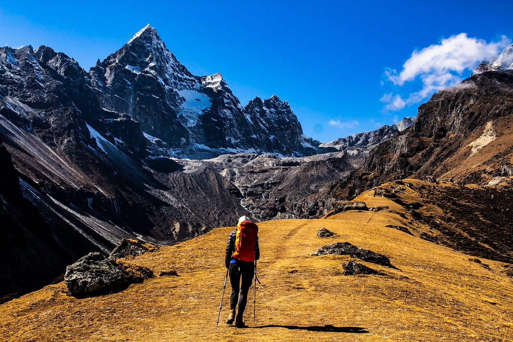
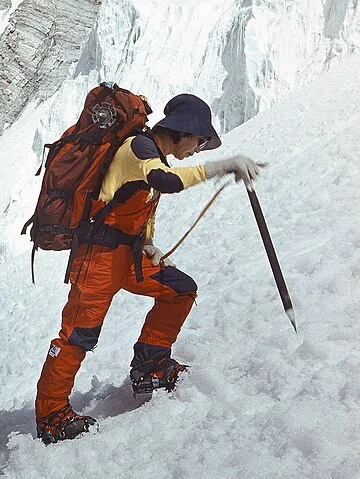
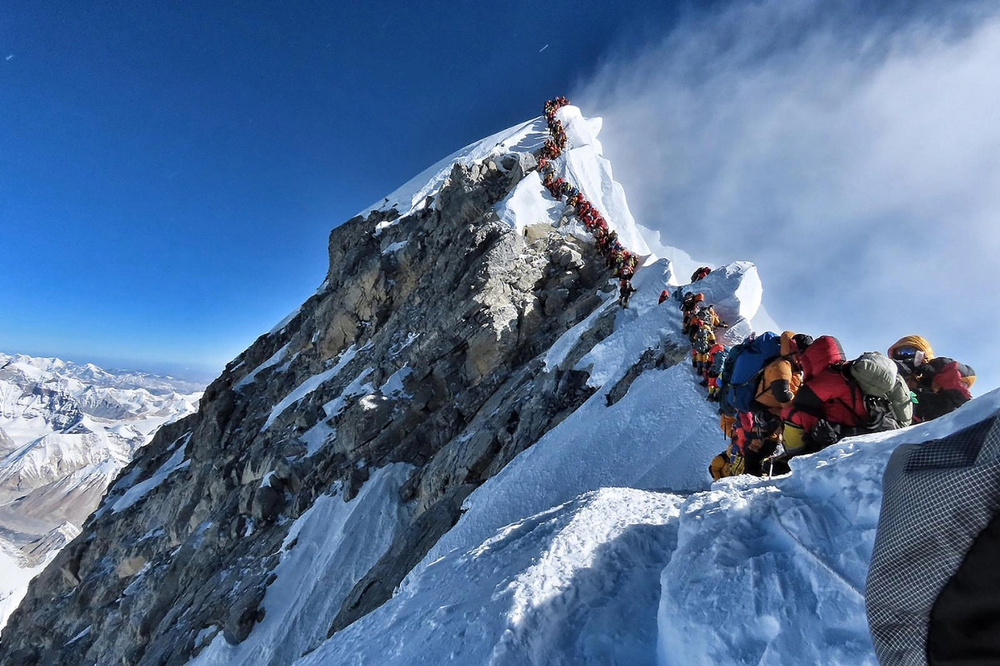

Interesting Facts
1. It's many names
To most the mountain is known as Mount Everest. However, it's important to remember that the mountain was known to the local people long before the first Western eyes set sight on it. The Tibetan name, Chomolungma, means “Goddess Mother of the World”. The Nepalase people refer to the mountain as Sagarmatha, the “Peak of Heaven" When the mountain was surveyed it was original called Peak XV, before being renamed for Sir George Everest, the surveyor-general of India from 1830 to 1843.

2. The first successful summit
Officialy the first successful summit of Mount Everest was by Sir Edmund Hilary and his Sherpa Tenzing Norgay in 1953. However, in 1924 George Mallory and Andrew Irvine made a summit attempt and were last seen just below the summit. This was the last anyone saw of Mallory until 1999 when his body was found on the mountain. Whether Mallory or Irvine ever got to the top will likely remain unknown.
3. The first woman to summit Everest
In 1975, Japanese climber Junko Tabei became the first woman to summit Mount Everest. As just the 36th person ever to climb the mountain, Tabei’s incredible achievement made her a global celebrity and assured her a place in the history books.

4. An ever growing graveyard
When people die climbing Everest, their bodies are left on the mountain and become landmarks for other mountaineers. It’s almost impossible to bury a body on Mount Everest due to the ice-hard ground. And it is as great a challenge for anyone to carry/drag the dead bodies due to the physical effort needed in the low-oxygen environment.
5. It's becoming a busy place
Mount Everest has been summitted over 9000 times. The best time to climb Everest is Mid March to mid June. This small window of opportunity, coupled with the accessibility to the mountian and the numerous expidition operators means that Everest has become a busy place. This can result in long queues (and wait times) to reach the summit.
